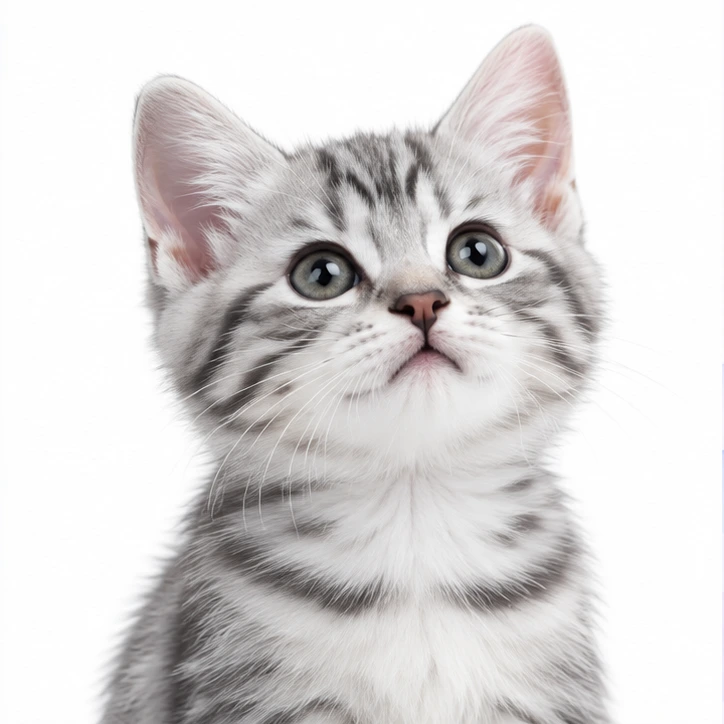
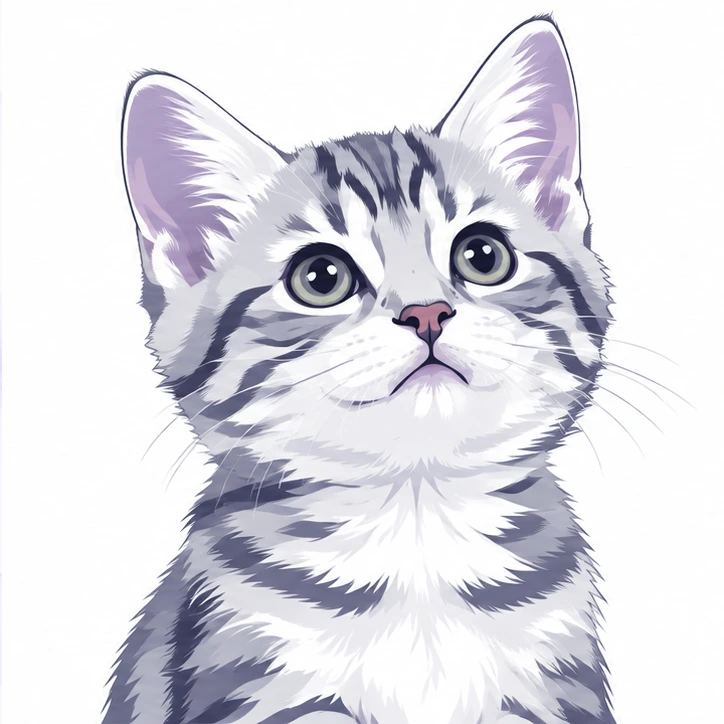

vtracer
Vector hóa ảnh nhanh chóng, rõ nét
Biến ảnh thành đường nét có thể chỉnh sửa, ngay trên trình duyệt.

Chọn ảnh hoặc kéo thả
PNG, JPG, WebP, BMP · Tối đa 20 MiB
Hoặc dán ảnh bằng Ctrl + V / ⌘ + V
Biến ảnh thành đường nét có thể chỉnh sửa, ngay trên trình duyệt.

PNG, JPG, WebP, BMP · Tối đa 20 MiB
Hoặc dán ảnh bằng Ctrl + V / ⌘ + V